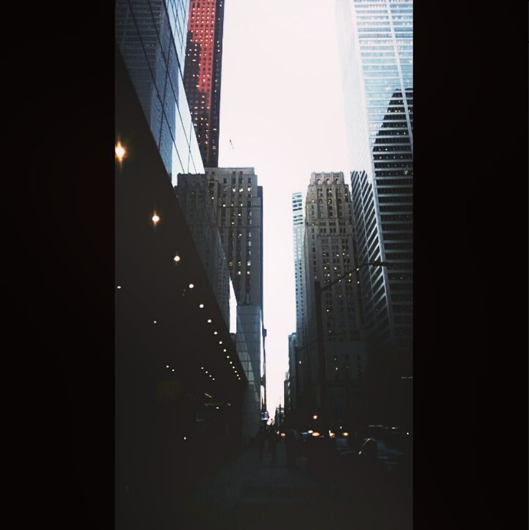
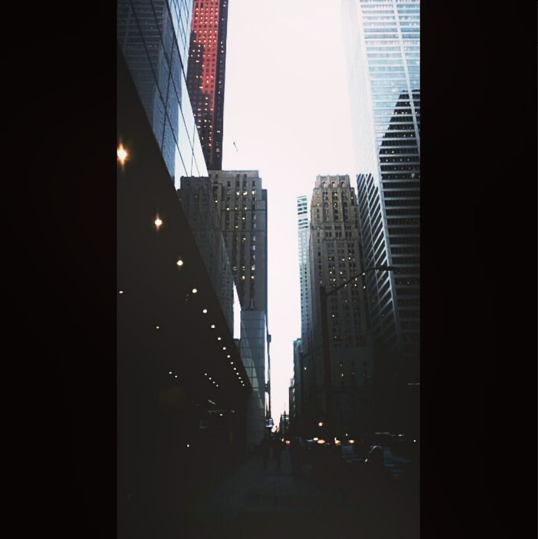
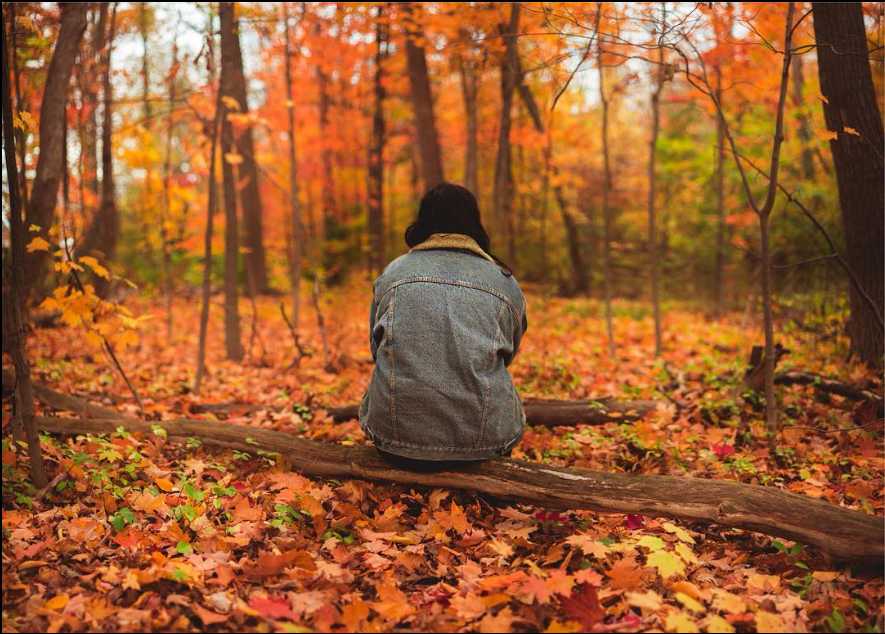
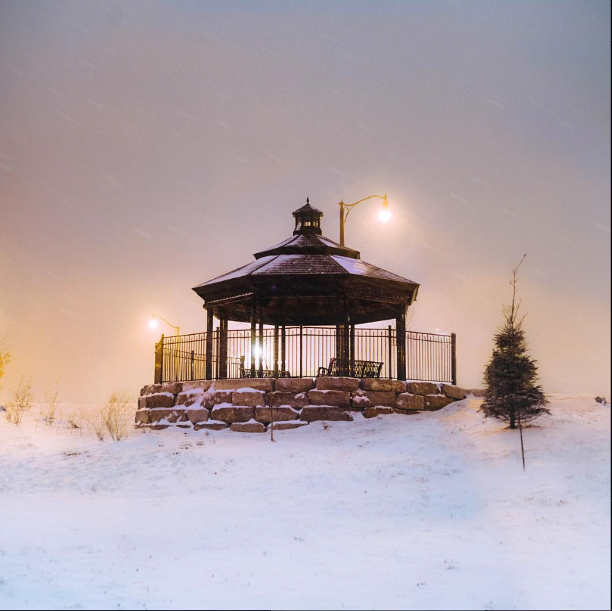
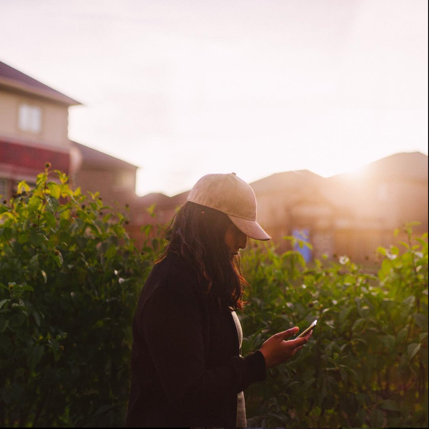
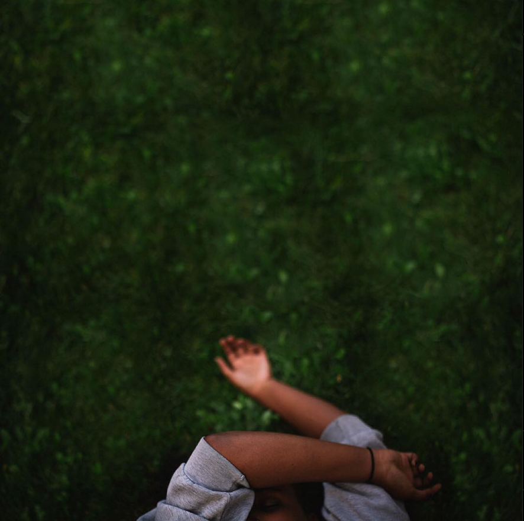
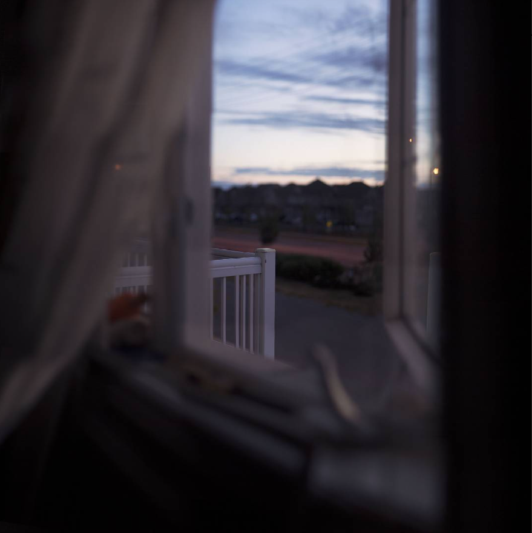

Abukarra Photography
Portfolio
Welcome to our photographic portfolio, a trip through time captured via moments, feelings, and skill. We welcome you to immerse yourself in a collection of photographs that elevate the commonplace to the extraordinary, capture fleeting moments of emotion, and tell original stories in this digital gallery. Every shot captured by our lens is a portal into a creative universe where our love for photography is evident. We are committed to stopping time and capturing the essence of every moment, whether it is the genuine laughter of a family, the romance of a wedding, or the breathtaking beauty of the natural world. Come see the world through our eyes as we share the photos that have served as both our inspiration and our work.
 




Our portfolio is a carefully chosen collection of our best photos, demonstrating our commitment to preserving both the natural world and life's most treasured moments. Every picture is a new chapter in our continuous visual narrative, which spans from poignant family pictures and magical weddings to breathtaking commercial projects and natural wonders. We take great satisfaction in our ability to combine technical mastery with creative flare to create photographs that are more than just pictures; rather, they are works of art that arouse feelings, bring back memories, and pique curiosity. We cordially encourage you to peruse this assortment, which features a wide variety of topics and aesthetics brought together by our dedication to quality in each and every frame. We hope our portfolio will provide you with visual pleasure and serve as evidence of our unwavering passion for the craft, whether you're looking for inspiration, learning more about our skills, or picturing your own photographic project.
